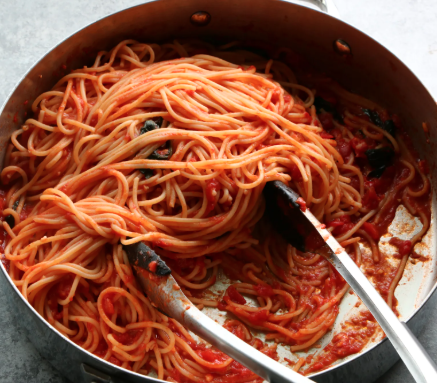

Dude, it's spaghetti. The ultimate comfort food. There's literally nothing I would rather eat for my last meal, provided it follows this exact recipe.
People can get pretty picky about their favorite meals. I'm no different. If faced with the prospect of going to an Italian restaurant where the spaghetti will be different, I can handle it, provided the restaurant knows what they're doing. The worst is going to someone else's house and they just don't know about flavor, the sauce is runny, the noodles are undercooked, etc.
Anyway, yeah. Spaghetti.